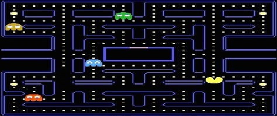

Pacman
I have created a pacman game from scratch using the C++ programming language alongside a graphics library called S2D (which staffordshire university students are able to use)
The game consists of: The pacman sprite, alongside 4 other ghost sprites, and also collectable munchies and cherry's-in order to gain a higher score within the game.
The game can be downloaded from my Github - Pacman Replica